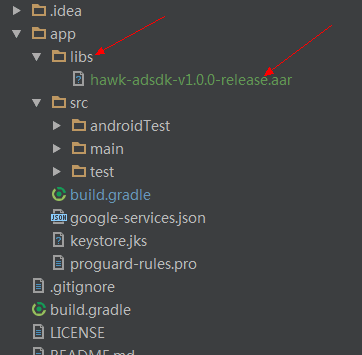
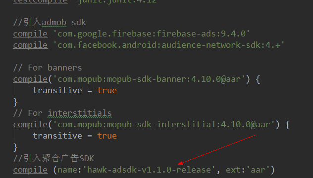
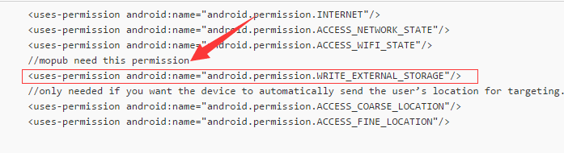

1. SDK嵌入
1.1. 步骤1：添加SDK到工程中
请在工程文件根目录下创建一个名为 libs 的子目录，并将广告 SDK 的 aar（adsdk.aar） 包拷贝到 libs 目录下。

1.2. 步骤2: 修改build.gradle文件
在dependencies节点添加如下代码：
compile(name: 'app-release', ext: 'aar')
compile 'com.google.firebase:firebase-ads:9.4.0'
compile 'com.facebook.android:audience-network-sdk:4.18.0'
// For banners
compile('com.mopub:mopub-sdk-banner:4.10.0@aar') {
transitive = true
}
// For interstitials
compile('com.mopub:mopub-sdk-interstitial:4.10.0@aar') {
transitive = true
}
repositories{
flatDir{
dirs'libs'
}
}

※ 如果没有集成其他广告平台获取收入,可以依赖其arr。比如：如果不打算集成admob，可以删去 "[compile 'com.google.firebase:firebase-ads:9.4.0' ]"此句依赖。
1.3. 步骤3: 修改AndroidManifest.xml文件
添加权限声明：
<uses-permission android:name="android.permission.INTERNET"/>
<uses-permission android:name="android.permission.ACCESS_NETWORK_STATE"/>
<uses-permission android:name="android.permission.ACCESS_WIFI_STATE"/>
//mopub need this permission
<uses-permission android:name="android.permission.WRITE_EXTERNAL_STORAGE"/>
//only needed if you want the device to automatically send the user’s location for targeting.
<uses-permission android:name="android.permission.ACCESS_COARSE_LOCATION"/>
<uses-permission android:name="android.permission.ACCESS_FINE_LOCATION"/>
※ 其中 //mobpub need permission 以下部分是mupub广告平台需要的权限,
如下图：
如果没有集成mopub可以不添加;
接入任意平台广告都需要在XML中的application节点添加以下声明：
//facebook ad need add this
<activity android:name="com.facebook.ads.InterstitialAdActivity"
android:configChanges="keyboardHidden|orientation|screenSize" //>
//admob ad need add this
<meta-data android:name="com.google.android.gms.version"
android:value="@integer/google_play_services_version" //>
//mopub ad need add this
<activity android:name="com.mopub.mobileads.MoPubActivity" android:configChanges="keyboardHidden|orientation|screenSize"/>
<activity android:name="com.mopub.mobileads.MraidActivity" android:configChanges="keyboardHidden|orientation|screenSize"/>
<activity android:name="com.mopub.common.MoPubBrowser" android:configChanges="keyboardHidden|orientation|screenSize"/>
<activity android:name="com.mopub.mobileads.MraidVideoPlayerActivity" android:configChanges="keyboardHidden|orientation|screenSize"/>
目前支持的SDK版本，最低到API 15（即Android系统版本4.0）：
<uses-sdk android:minSdkVersion="15" android:targetSdkVersion="22" />
// 如果开发者一定要targetSdkVersion到API 23以上，请确保调用任何聚合SDK的接口前，已经申请到了SDK要求的所有权限。否则聚合SDK将无法工作。
1.4. 步骤4: 修改混淆文件
在proguard-rules.pro添加如下代码：
-keep class com.hawk.android.adsdk.ads.**{*;}
-kepp class com.google.android.gms.ads.**{*;} // 如果没有添加集成admob平台可以不添加此句混淆语句
如果添加了mopub平台需要添加以下混淆代码：
-keep class com.mopub.mobileads.MoPubActivity{
<fields>;
<methods>;
}
-keep class com.mopub.mobileads.MraidActivity{
<fields>;
<methods>;
}
-keep class com.mopub.common.MoPubBrowser{
<fields>;
<methods>;
}
-keep class com.mopub.mobileads.MraidVideoPlayerActivity{
<fields>;
<methods>;
}